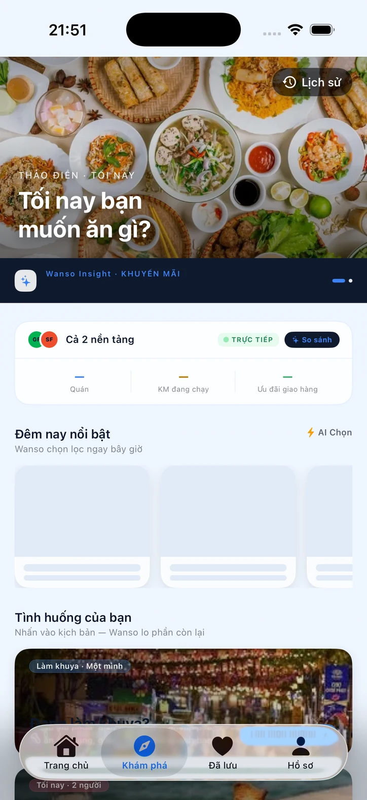

拆解业务决策
先还原用户要做的选择。选一家餐厅和选付款平台，需要的依据并不相同。
我做过 Wanso 外卖选餐和 ONENTRA 工作台。你可以亲自走一遍两个产品。
我为越南用户设计选餐与比价流程，也为运营团队设计 AI 工作台。这里有我做的需求、跑过的原型，以及验收时发现的问题。



上滑手机查看用餐场景。点底部 Trang chủ 回到选餐首页。
原生探索页中的加班、双人晚餐和健身餐场景。向下滑回顶部。
点左上角 TP.HCM 查看城市选项，或点底部 Khám phá 打开探索。
点抽屉上方收起位置选择，回到选餐首页。
从原网页版工作台发起经营周报。
打开《渠道订单与退款口径》，查看统计规则。
引用回对话后，原草稿与笔记标签一同保留。
单独运行只读 SQL，核对 63 笔订单的净销售额。
另一组交付用例。生成的 Excel 包含三个渠道与合计公式。
个人优势
先还原用户要做的选择。选一家餐厅和选付款平台，需要的依据并不相同。
把“推荐要准”写成可以复测的约束。缺菜单、价格未知、临时改口味，都要有处理方式。
沿着业务问题检查资料、取数和文件。能打开的表格，还要能复算其中的关键数字。
用内测反馈修正推荐，用真实生成的工作簿定位遗漏，再排后续迭代。
项目作品
从一顿午餐的预算，到一份周报的合计。两个案例分别记录我做的产品判断和交付。
 移动应用
移动应用
 桌面网页
桌面网页
怎样让一个有预算、有忌口的人，在午休时决定吃什么、去哪点？我将选餐与平台比价拆成两个连续决策。
业务人员要交付的是一份能核对、能修改的经营周报。我从写需求、取数到交付表格，逐步检查每个环节。